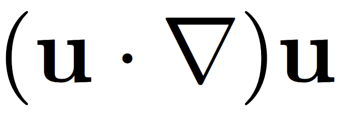

プロフィール
はじめまして！現在、Web開発の基礎を勉強中の神田聖です。
2年次の時にこの講義を受講することを忘れていたので、3年次の今受講することになりました。
私の好きなこと
- 物理学（大学院では物理系の研究室を志望しています）
- 音楽を聴くこと
- 勉強すること
自分がよく使っているアイコン

ちなみにこの画像は数式であり、ナビエストークス方程式の移流項という名前の式である。
自分が物理を好きになったきっかけの人
通称：ヨビノリ（予備校のノリで学ぶ大学の数学・物理のチャンネル）